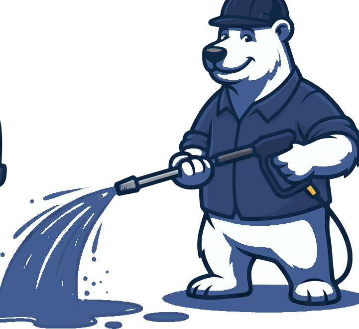
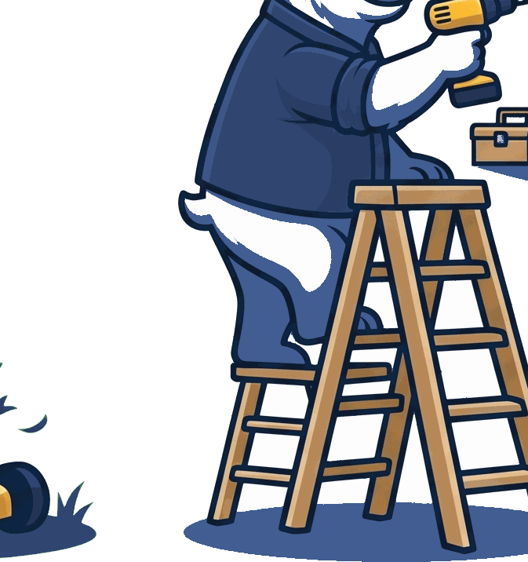
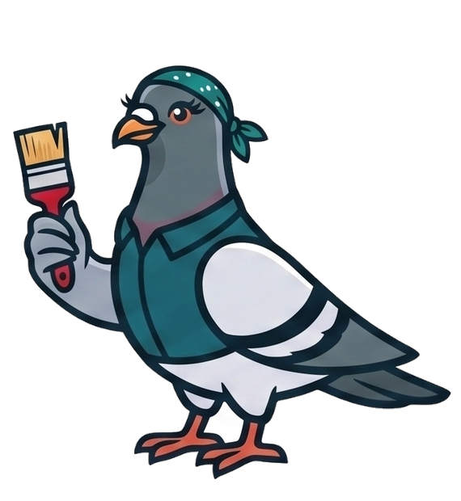

Services
Every season. Every job.
Outside work is the Bear's. Design and finish work is the Bird's. Same company, same phone number, same free estimate.
The Bear's side
Snow Plowing
Residential driveways and commercial lots. Seasonal contract or one-off. Two trucks on route, out before dawn.

The Bear's side
Landscaping
Mow, mulch, plant, trim, rake. Gutter clean-outs and winter tree & shrub protection.

The Bear's side
Pressure Washing
Driveways, siding, decks, roofs, sidewalks, pool decks. If it's outside and it's dirty, we can help you out.

The Bear's side
Handyman & Remodeling
Windows, basements, kitchens, flooring, drywall, deck refinishing and three-season rooms.

The Bear's side
House Clearance
Attics, garages and estate clear-outs. It can be overwhelming figuring out where to start — we start.

The Bear's side
Sunrooms & Patio Enclosures
Three-season rooms, and trained dealer & installer for Helios retractable glass sunrooms.

The Bird's side
Design & Remodeling
Interior & exterior design and construction: custom design, trim, cabinets, drywall, paint, tile and finish work.
